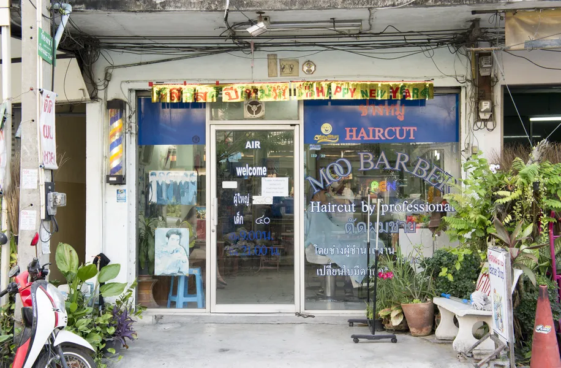
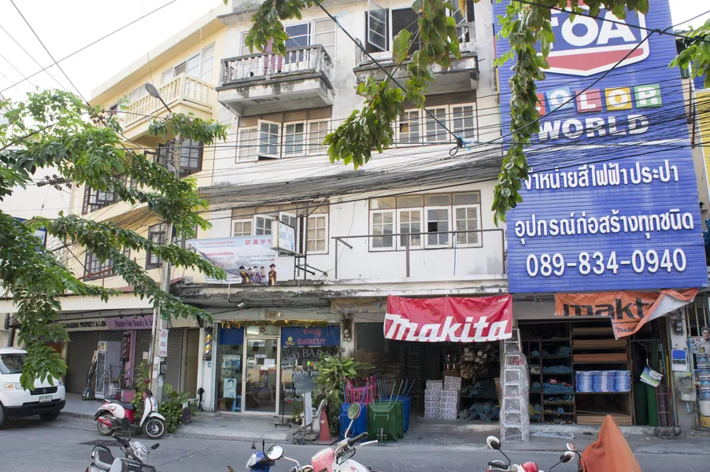
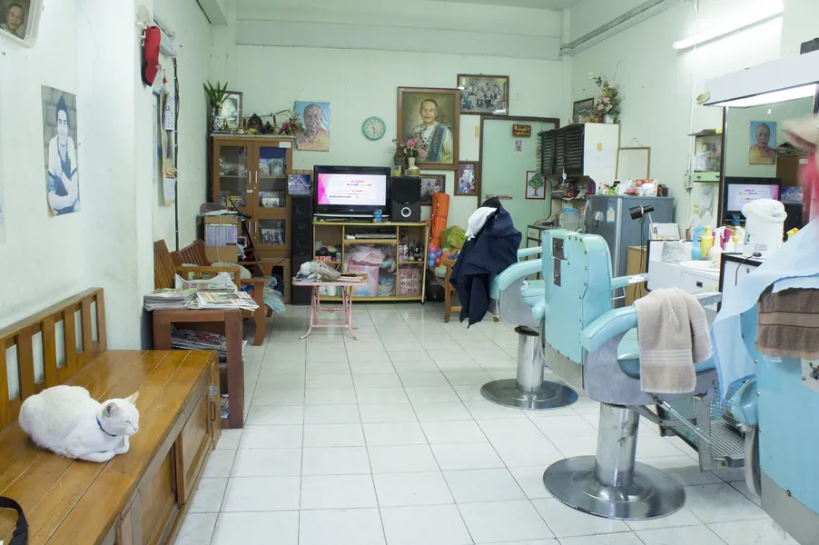
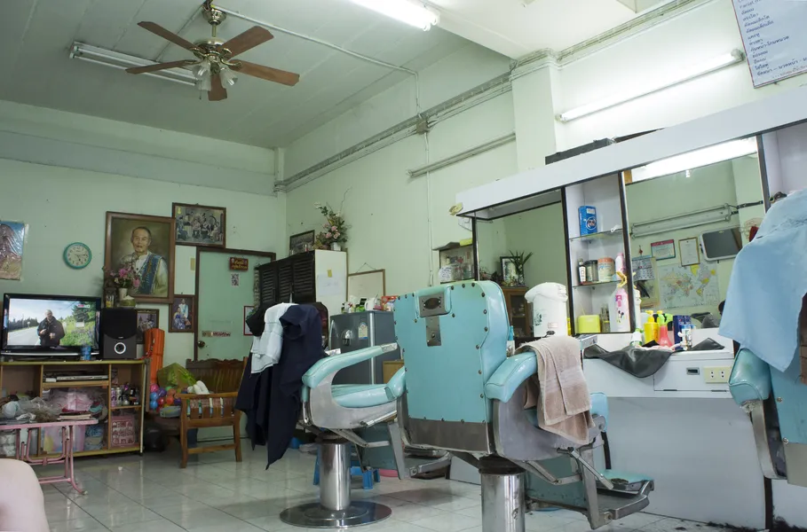
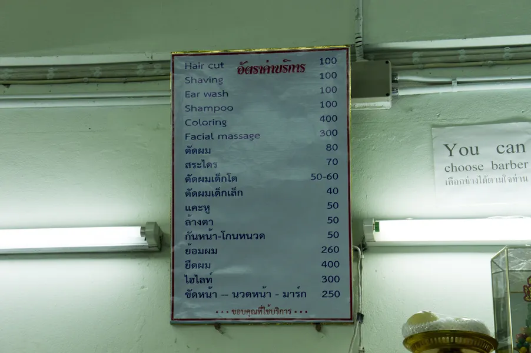
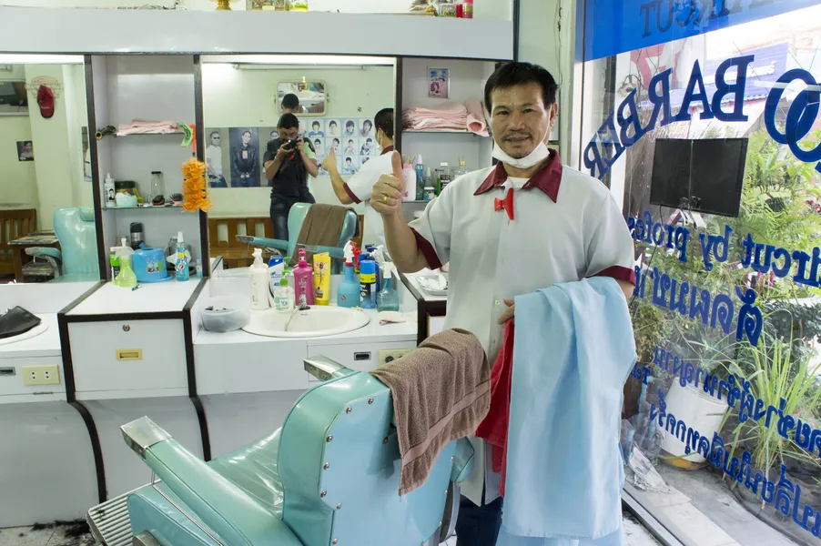
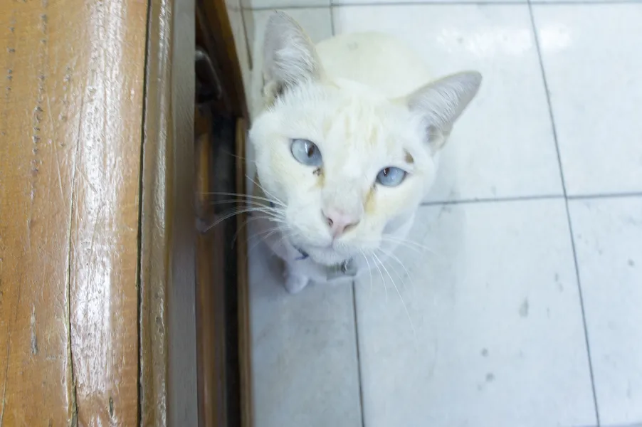

{kind=link}

Поприветствовав меня, он указал, куда сесть, было три свободных кресла.
Салон-парикмахерская представляла собой зал примерно 16 квадратных метров, не совсем свежего вида, но вполне приемлемо: зеркала (три больших и три небольших с тыльной стороны от кресел); три мощных металлических кресла, немного обшарпанных, но мягких, покрытые кожзамом; деревянная скамья протянувшаяся вдоль зала с сидящим дяденькой (как оказалось это полицейский в гражданском, ничего такой, добродушный, про погоду с ним побеседовали, про то как в Сибири очень холодно зимой).
{kind=link}

Вернемся к стрижке :)
Сама стрижка была заявлена за 100 бат. Так как я пришел в обеденное время и мне предстоял еще длительный рабочий период, я попросил дополнительно помыть мне голову после стрижки, чтобы мои волосинки не летали как снежинки по всему кабинету и не раздражали коллегу своим поведением, это стоило еще 100 бат, итого 200 бат.
{kind=link}

Усадив меня, мастер взялся за своё дело, предварительно спросив нужно ли подбрить мои усы и бороду (на тот момент я был бородато-усато :)), подумав немного, я отказался чтобы он их трогал, достаточно было просто стрижки и помывки головы. Пройдясь по моему кумполу машинкой с разных сторон, распылив и намочив водой волосы, поработав ножницами, вообщем сделав это быстро и чётко, мне больше понравилось, чем когда я стригся у тайки в салоне на Чаяпрыке.
{kind=link}

Закончив, он завернул в дополнительное полотенце мои плечи, принёс еще небольшое полотенце, сложил в несколько раз (буду называть его "складишок"), на него постелил матерчатую салфетку, обмазал мыльным раствором мои вискИ и шею потом отошел. Подозрительно наблюдая за ним в зеркало, я обнаружил у него в руках опасную бритву с блестящим лезвием, в голове промелькнуло: "Надеюсь я в надежных руках, а то неохота с порезами ходить".
{kind=link}

Вернувшись ко мне, он очень аккуратно и тщательно сбрил остатки торчащих волос как пеньки лесоруб. Во время процедуры, признаюсь, мне было страшновато и приятно одновременно, а по всему телу бежали мурашки. Я уже вздохнул с облегчением, но тут вдруг он взял складишок и постелил мне на место верхней губы, так что край подпирал мне мой нос. Я вообще не понял, что он этим хотел добиться, но не стал его прерывать, а терпеливо ожидал его действий. Легким движением руки он достал маленькие ножницы и залез мне прямо в ноздри!!! Такого поворота я никак не ожидал, этот эксперимент я решил продолжить :) аккуратно срезал "лишние" волоски в носу - хотя я его об этом не просил.
{kind=link}

После этого следующую манипуляцию я также не мог предвидеть. Какой вы думаете "предмет для пыток" он достал? Ватные палочки! Я их не видел, но по ощущениям были они, или, по крайней мере это была вата намотанная на что-то тонкое. По очереди, в каждое отверстие моих ушей, он начал толкать и прочищать мои ходы, видимо, он подумал, что я плохо слышу и решил мне помочь. Я лежал как бревно и мне было уже пофиг, что делают с моим телом, это было необычно и я не показывал вида, что я офигевал от происходящего :)

Следом шла непосредственно мойка головы. Перед этим он в прочищенные им мои уши затолкал беруши - видимо чтобы его труд не пропал зря, обернул плечи еще одним полотенцем, потом принес какую-то байду в виде плотной манжеты для плечей, чтобы не намокло. Кресло он прокрутил вокруг своей оси и уронил в горизонтальное положение, так что моя голова оказалась над раковиной. Принялся мыть мою голову, налил шампуня, хорошо, тщательно промыл, смыл и так он сделал три раза. Возможно три раза лил на мою голову не только шампунь, может кондиционер какой-то, ну вообщем три раза моющей жидкостью и три раза смыл.

Отжал волосы, повернул кресло обратно, но также в горизонтальном положении. Вытер полотенцем мои волосы и после этого начал делать незадекларированный легкий расслабляющий массаж. Мял голову, руки, запястья, кисти рук, завернул руки назад, потянул, массировал плечи, добрался до спины, повернул с усилием мою спину вокруг своей оси в одну и в другую сторону (конечно было приятно). После всего он сказал: - "Кааап" (что-то вроде "пожалуйста"), то есть: "Стрижка готова"! За его старания я не поскупился дать ему на чаевые + 20 бат к 200. Он был очень рад и весь светился, приглашал к себе, в салон, в следующий раз.
{kind=link}

Вот такой тайский сервис.11.03.2015 г.
P.S. Геолокация парикмахерской: https://maps.app.goo.gl/Sw7gFkJxHxFXdZJU6 12°56'01.6"N 100°53'30.5"E